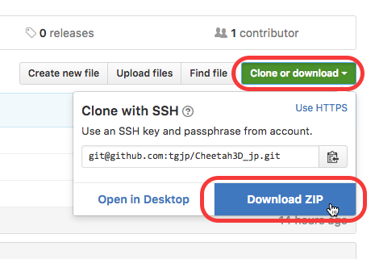
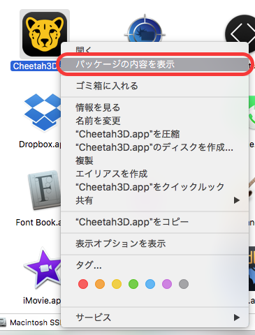
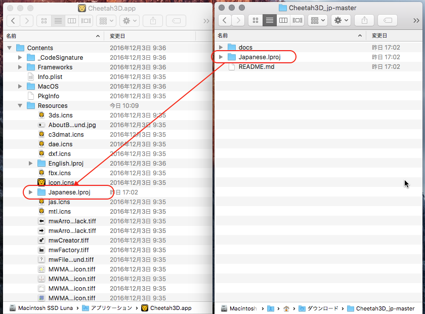

1. リンク先よりリソースファイルをダウンロードし、ダブルクリックで解凍しておきます。
https://github.com/tgjp/Cheetah3D_jp
2. アプリの右クリック（ Control + クリック ) し、コンテキストメニューから "パッケージの表示" を選択します
3. Contents/Resources フォルダに、Japanese.lproj フォルダをコピーします
4. Cheetah3D を再起動し日本語化されていることを確認してください
1. Contents/Resources フォルダから、Japanese.lproj フォルダを削除します
2. アップデートする場合は、最新版のリソースファイルから Japanese.lproj フォルダをコピーします
3. Cheetah3D を再起動し、変更が適用されていることを確認してください
公式ホームページ http://www.cheetah3d.com/
公式ホームページ 日本語フォーラム http://www.cheetah3d.com/forum/forumdisplay.php?f=15